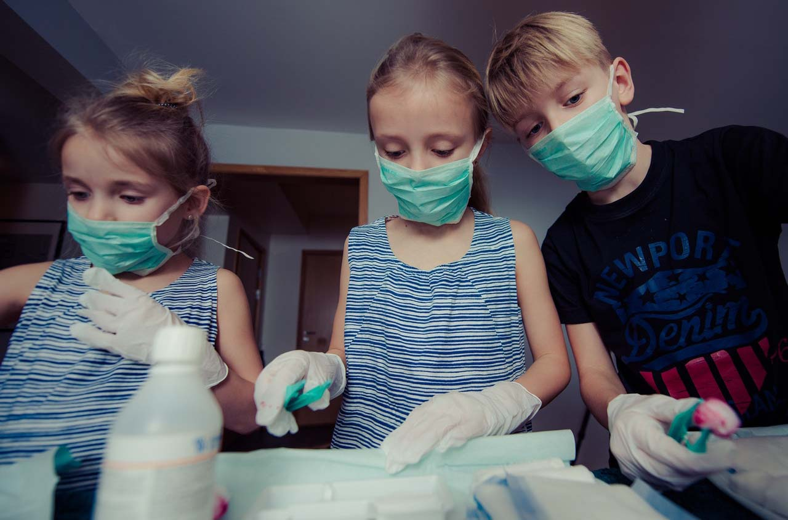
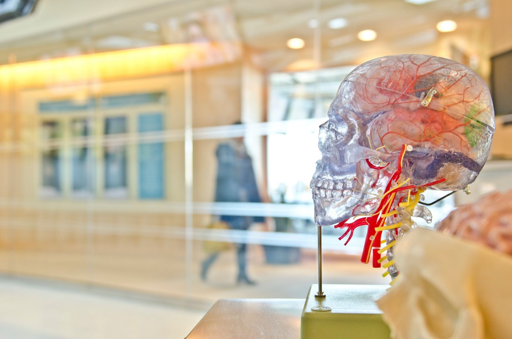

Explore the wonders of our cosmos. Our fantastic exhibition, ‘The Sky Above Us,’ explores the night sky and what we can see and know about the universe around us. We’ll locate the various constellations and galaxies that can be seen and learn a bit about the early navigators who used the stars to travel by.
Follow the journey of our solar exploration: from early Arab traders, to Galileo’s telescope, to the latest exploration of the planets in our solar system.
For centuries, philosophers and scientists have wrestled with the question of our origins. Where do we come from and how did we get here? Since Darwin proposed his theory of evolution, we have had a framework for exploring and understanding our place in this world. Discover the origins of life on this planet and how the species we know today have evolved over time. You can also take some time to meet a few of the creatures who didn’t survive, including our Woolly Mammoth, the Dodos, and a number of dinosaurs too.
From micro-organisms to the human body, major breakthroughs in biology are offering us unique insights into the great wonders of the tiny world. For many people, their life expectancy is much longer and their quality of life much improved, thanks to the growth of our understanding of medicine. Over a series of exhibits, we explore the history of medicine and take a look at some major breakthroughs, including the discovery of penicillin and the first heart transplant. Many of our great medicinal discoveries have come not only from the lab but also from observing animals in the wild. Often our fellow creatures have beat us to it.
The information revolution is here, and robotics and artificial intelligence are the science of the future. From useful home applications of AI to industrial uses of robotics, the future is here. You can even say hello and shake the hand of Rob the Robot.
As we learn more and more of the impact humans are having on the planet, the more important it becomes that scientists explore how to create a sustainable future not just for humans but for the whole planet. In our ecology section of the museum, we unpack the dangers we currently face, including global warming, extinction of species, and pollution. But we also focus on the positive ways we can all contribute to a brighter future.